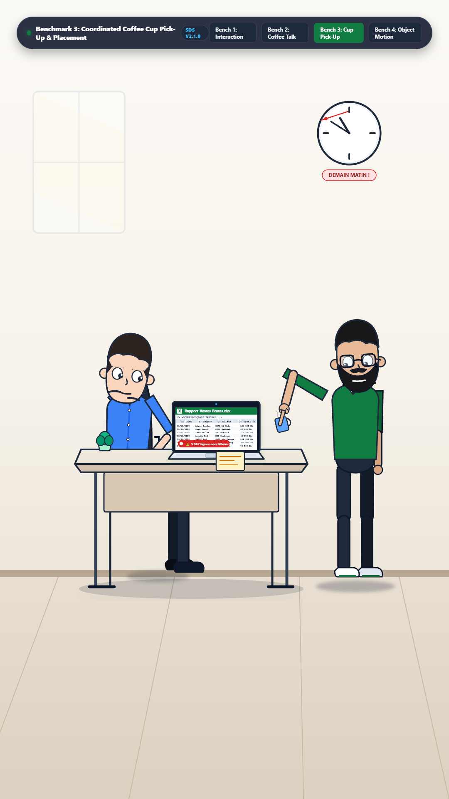
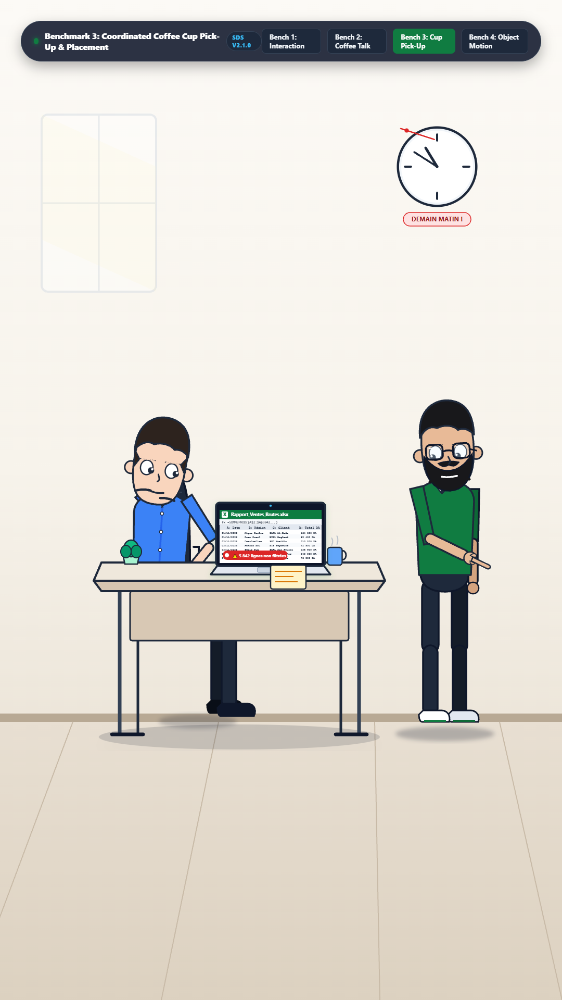
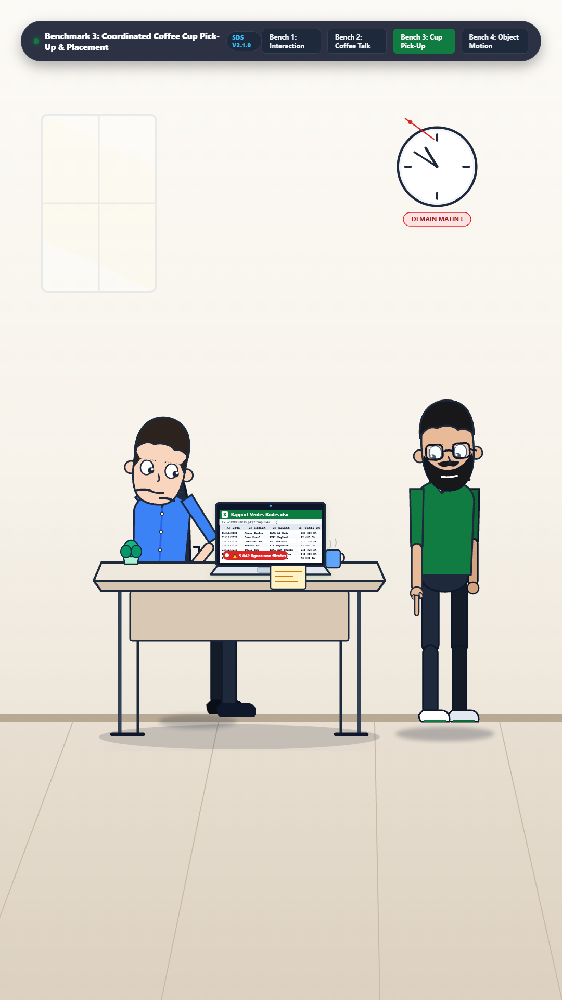
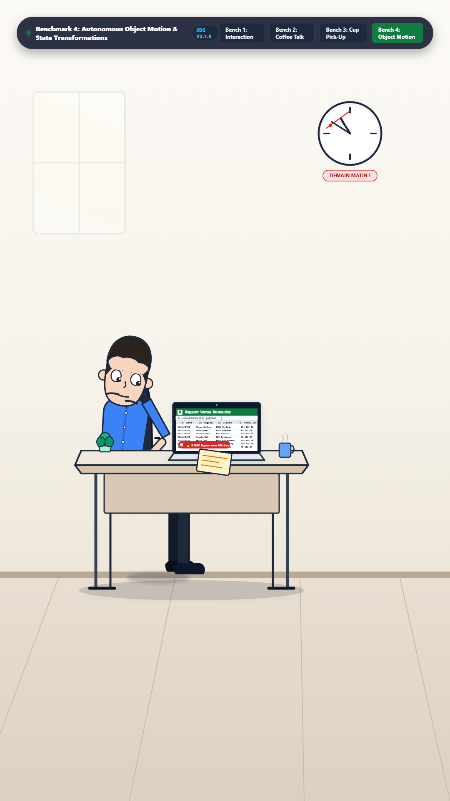
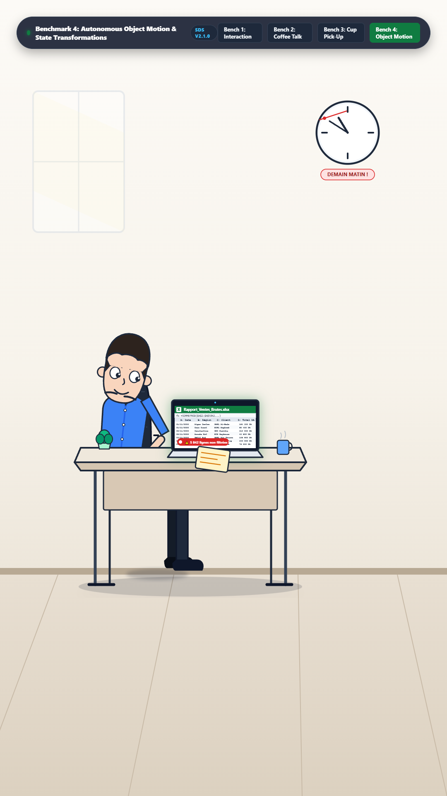

Runtime Verification: 30 FPS Headless Render | Dynamic Anchors | Zero Discontinuity Coupling | Video Export
1. Mohamed Proposing Coffee Break (t=0.8s)
2. Mohamed Reaching for Cup Handle IK (t=2.7s)
3. Hand Contact & Cup Attached Lift (t=3.4s)

4. Cup Rotated While Held (t=4.5s)

5. Cup Placed Stably on Desk Surface (t=6.2s)

6. Cup Released, Arm at Rest (t=7.4s)
1. Document Materializes on Desk Surface (t=0.6s)
2. Document Follows Curved Path Trajectory (t=1.8s)
3. Document Pivots into Reading Angle (t=2.8s)

4. Document Scales for Emphasis (1.15x) (t=3.4s)

5. Laptop Screen State: Pivot Table Glow (t=4.4s)
6. Laptop Screen Folds Closed (Hinge Fixed) (t=5.5s)